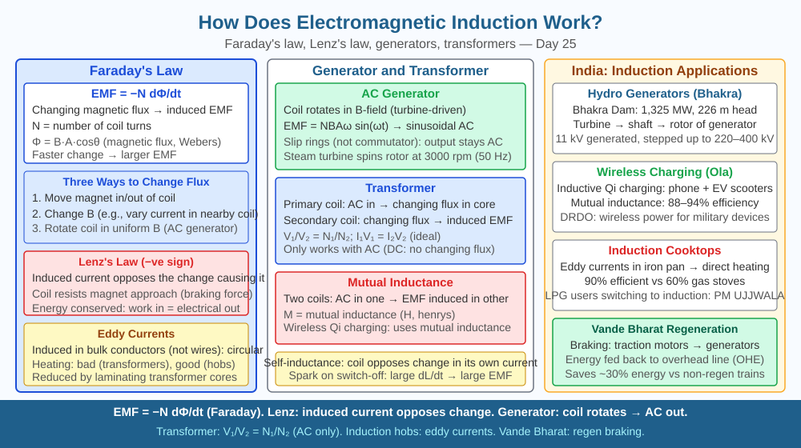

By the end of this lesson, you should be able to state Faraday's law with the formula EMF = −dΦ/dt, explain Lenz's law, describe how a generator differs from a motor, and predict what happens to induced EMF when a coil spins twice as fast.
In 1831, Michael Faraday discovered something remarkable: he could make electricity without a battery — just by moving a magnet near a coil of wire. Today, every power station in India, every transformer on a electricity pole, and every wireless phone charger works because of this discovery. How does moving a magnet create electricity, and why does it stop the moment the magnet is held still?
Faraday's law of electromagnetic induction states: whenever the magnetic flux through a conducting loop changes, an electromotive force (EMF) is induced in the loop. In equation form:
EMF = −dΦ/dt
where Φ (phi) is the magnetic flux (in webers, Wb = tesla × m²) and dΦ/dt is the rate at which that flux changes with time. The negative sign is the mathematical expression of Lenz's law (explained below). The key word is changing: a static magnet sitting beside a coil induces nothing. Only a change in flux — caused by moving the magnet, moving the coil, or changing the field strength — produces an EMF.
What is magnetic flux? Flux Φ = B × A × cos θ, where B is the field strength, A is the area of the loop, and θ is the angle between the field direction and the normal to the loop. Flux is highest when the field passes straight through the loop (θ = 0°) and zero when the field runs parallel to the loop plane (θ = 90°).
Lenz's law — the direction of induced current: The negative sign in Faraday's equation has a physical meaning. The induced current always flows in a direction that opposes the change in flux that caused it. If you push a north pole towards a coil, the induced current creates its own north pole facing the approaching magnet — repelling it. This opposition means you must do work to push the magnet; that work is the source of the electrical energy. Lenz's law is essentially energy conservation expressed magnetically.
How a generator works: A generator is a motor run in reverse. Instead of supplying current to make a coil rotate, you mechanically rotate the coil inside a magnetic field. As the coil turns, the angle θ between the field and the coil normal changes continuously. The flux Φ = BA cos θ changes at a rate that follows a sine curve. Therefore the induced EMF also follows a sine curve — this is why AC (alternating current) is naturally produced by a rotating generator. The EMF peaks when the coil plane is parallel to the field (rate of flux change is maximum) and is zero when the coil faces the field directly (flux is maximum but momentarily not changing).
The peak EMF is: EMF₀ = NBAω, where N is the number of turns, B is field strength, A is coil area, and ω is angular speed (radians per second). If the coil rotates twice as fast (ω doubles), the rate of flux change doubles, and the peak EMF doubles. India's grid runs at 50 Hz — generators at Tarapur or Kudankulam nuclear plants spin at exactly 3000 rpm (50 rotations per second) for this reason.
Transformers — induction without rotation: A transformer uses two coils wound on an iron core. AC current in the primary coil creates a changing magnetic field in the iron core, which then passes through the secondary coil — continuously changing its flux. By Faraday's law, an EMF is induced in the secondary. The ratio of voltages equals the ratio of turns: V₂/V₁ = N₂/N₁. Step-up transformers (more turns in secondary) raise voltage for long-distance transmission, reducing current and therefore reducing transmission losses (P_loss = I²R). Step-down transformers at local substations reduce 11,000 V to the 230 V used in Indian homes.
Wireless charging: A phone charging pad contains a coil carrying alternating current at around 100–200 kHz. This rapidly changing current creates a rapidly changing magnetic field, which induces an EMF in the coil inside the phone — transformer action without a wire connection. The phone's internal circuit converts this AC to DC to charge the battery.
Three things determine whether induction happens and how much:
The direction is always given by Lenz's law: induced current opposes the change.
| Increase... | Effect on induced EMF |
|---|---|
| Speed of rotation (ω) | EMF increases proportionally |
| Number of turns (N) | EMF increases proportionally |
| Magnetic field strength (B) | EMF increases proportionally |
| Coil area (A) | EMF increases proportionally |
The included SVG shows two side-by-side diagrams. Left: a bar magnet being pushed into a coil — flux arrows enter the coil, a galvanometer needle deflects, and a label reads "flux increasing → EMF induced." Right: the same magnet held stationary — no deflection, label reads "flux constant → no EMF." A second panel shows a coil rotating between magnet poles with a sine-wave graph of induced EMF below it, with peaks labelled "coil parallel to field" and zeros labelled "coil perpendicular to field."

Electromagnetic induction underlies India's entire electricity infrastructure:
A transformer is described as having 200 turns in the primary and 4000 turns in the secondary, connected to a 230 V AC supply. Calculate the output voltage. Now suppose the secondary coil has a resistance of 100 Ω connected as a load — calculate the secondary current and the primary current (assume 100% efficiency). Finally, predict: if the primary were connected to DC instead of AC, would the secondary produce any output? Use Faraday's law to justify your answer.
What causes electromagnetic induction to produce a current?
Correct answer: b
Why is understanding Faraday's induction mechanism more useful than knowing generators exist?
Correct answer: c
What would happen to induced EMF if the coil rotated twice as fast inside the magnetic field?
Correct answer: c
Explain today's concept to a younger student in 60 seconds without technical jargon. Then explain it again using the correct scientific vocabulary.
If both explanations describe the same mechanism, you have understood the concept rather than memorised it.
Lenz's law makes electromagnetic braking possible — no friction required. Maglev trains and high-speed elevators use this: a conducting disc or plate moves between magnet poles. The changing flux induces eddy currents in the conductor, and by Lenz's law these currents create a force opposing the motion — a smooth, wear-free braking force that increases with speed. Unlike disc brakes, electromagnetic brakes never need pad replacements and cannot overheat from friction.
Electromagnetic induction occurs because a changing magnetic flux through a coil induces an EMF given by Faraday's law (EMF = −dΦ/dt); doubling the coil's rotation speed doubles the rate of flux change and therefore doubles the induced EMF — the principle behind every generator, transformer, and wireless charger.